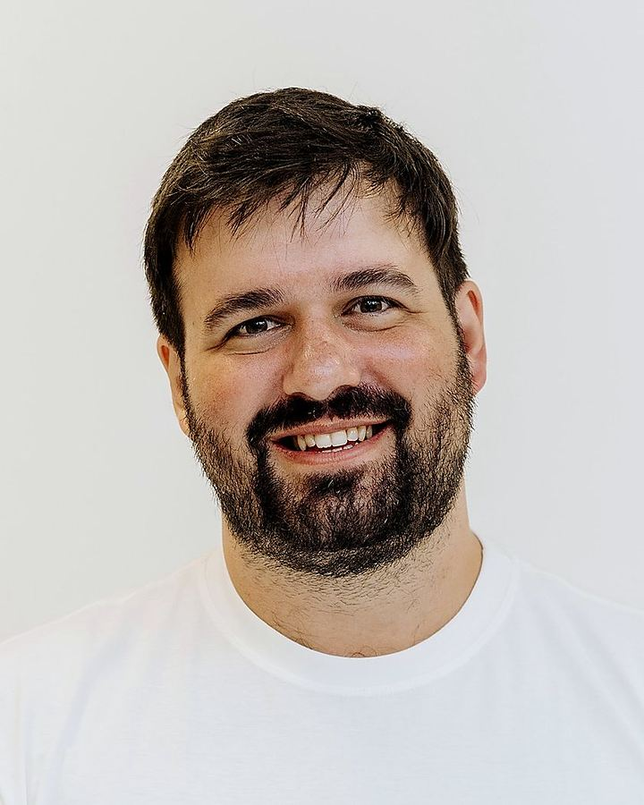

AN INTERACTIVE WORLD BY LUCAS ARANA
I'm Lucas. Software engineer & COO at Nexton.
I build the operation connecting Latin American engineers with US teams.

Probá abrirlo en una versión actual de Chrome, Edge o Safari con aceleración gráfica.
Connect with me on LinkedIn